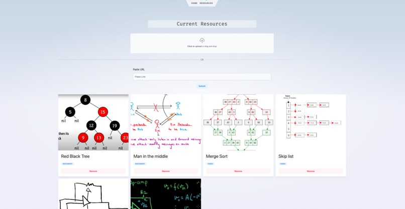
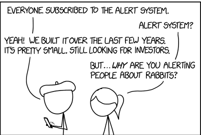
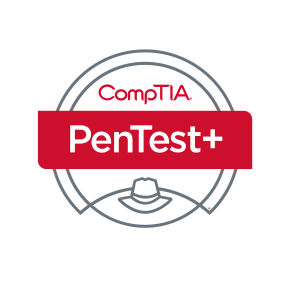

Six Eyes is an image and video lookup based on an image search, searching through a database of videos, documents, and images, in order to enable more efficient relevant resource retrieval. For this project, I specifically work on both the back-end and the front to back connections, enabling http endpoints and connections between front end and back end. I built scripts to scrape the files off the internet and initiate connections with the database, a self-hosted redis server. This project was created for the TAMUhack X in January.
For more details, see here.

SketchID
SketchID is a sketch identifier created for the 2023 Datathon Pictionary Plunge challenge.As the provided training dataset for this challenge was significantly small, I employed techniques like transfer learning to transfer knowledge from a larger dataset with more classifications, then fine tuned to the given classifications. In addition, as the problem involved identifying sketches, I used a recurrent neural network(RNN), a bi-directional neural network to imploy Long short-term memory(LSTM). This convolution neural network won first place for this competition.
For more details, see here.
Graphite
Graphite is a note taking web application that contains features like topic connection graphs and markdown and latex enabled editor. I specifically worked on the back end, and some shown features, enabling the topic graph seen on the left, as well as enabling the custom linking to other topics. This project was made for the 2023 tamuhack competition in spring. My team won second place overall with this project. For more details, see here.
Get In Line
Get In Line is an optical character recognition tesseract model specialized for the xkcd font styles, and is trained and tested on images generated by creating font from their cartoons. This project won third at the 2022 datathon for it's challenge. For more details, see here.

Certifications
Security+
Security+ is a certification by CompTIA, which are a foundation of cybersecurity skills often used in the industry. I received this certification this January.
Pentest+(in progress)
Pentest+ is also a certification by CompTIA, which specifically trains penetration testing, teaching vulnerability assessment and analysis. I recently started studying this certification after getting the Security+ certification.

Cybersecurity
CTF Team
I am a Co-Captain of a capture the flag team, which are cybersecurity competitions, called Squid Proxy Lovers. Almost every other week we participate in these competitions over various topics in cybersecurity.